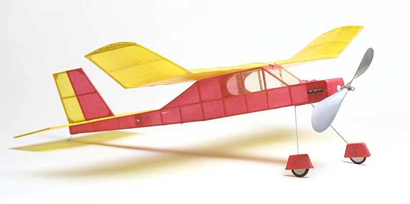
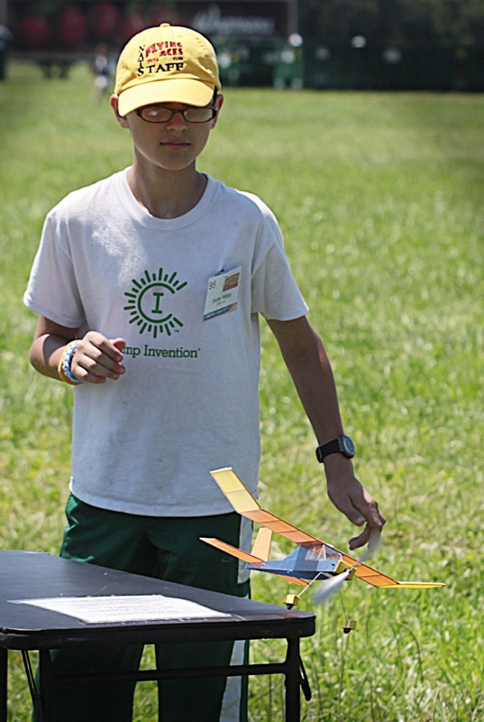
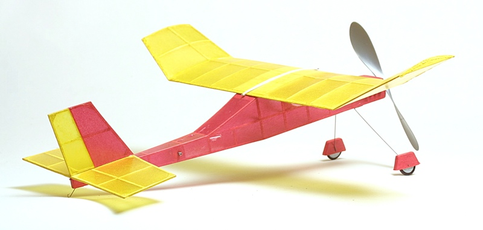

| The Prairie Bird was originally designed by Bob Peck, founder of Peck-Polymers, and published as a construction article in the January 1979 issue of Model Airplane News. The kit has since remained a staple in the Peck-Polymers lineup ever since, a popular model for sport flying and Embryo Endurance competition for over 35 years. | |
|
 My Prairie Bird finished in red and yellow Esaki and gloss Krylon, showing a bit of wear. | |
|---|---|
|
During the summer of 2015, my son Gryffin and I each built a Prairie Bird to fly at the FAC Non-Nats in July. He built his from the Peck-Polymers laser cut kit while I scratch built mine based on the original plan. Both our models are covered with Esaki Japanese Tissue and sealed with Krylon. They both trimmed up quite readily using a single loop of 1/8 Tan II, though I eventually stripped a new, slightly thinner motor, to pack in a few more turns.
Both of our Prairie Birds are consistent flyers, yet mine likes to circle right while Gryffin's goes left. Our times average close to 90 seconds in still air, though of course still air rarely happens during a contest. I actually made my last official flight at the Non-Nats in a light rain, simply because I didn't know if it was going to clear before time expired. It didn't, and while I should have flown earlier in the day in dry air, I was quite happy with my final placing in the top third of the FAC pack. Gryffin had a little tougher time picking his air, but managed a very respectable finish in the middle third of the pack. This was his first contest and first fully built up stick and tissue model, and he finished the weekend with a smile on his face and schemes for next year. That's a success in my book! He also keeps reminding me that while I may have bested him in the actual competition, he still holds our house Prairie Bird record, set the day before with a thrilling thermal ride of 2:18 that had many wondering if he would still have a model come contest day! Both our models suffered blown motors in Geneseo, as evidenced by a few tissue tears. No matter, we will have them well repaired and ready to battle forth again soon. |
 Gryffin launches his Prairie Bird at the 2015 FAC Non-NATS in Geneseo, NY |
|
 The Prairie Bird is a consistent flyer and a great father and son team build. | |
|
Specs Weight: | 15 grams | Wing Span: | 15.5 inches | Wing Area: | 45 square inches | Length: | 13.5 inches | Prop: | Peck Polymers 6-inch dia. | Motor: | 18-inch loop of .125 FAI Tan II | |
Return to
Copyright 2015, Thayer Syme. All rights reserved